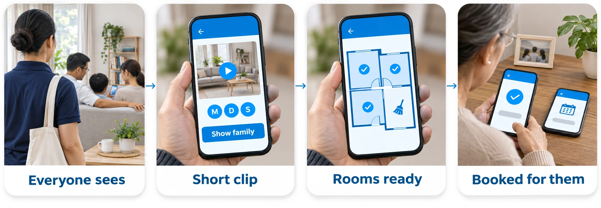
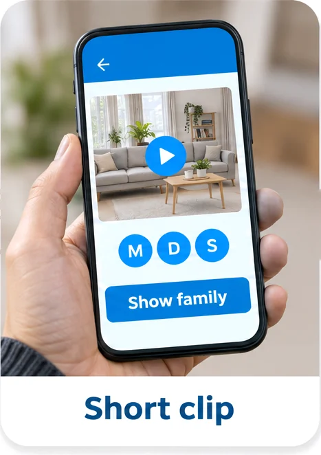
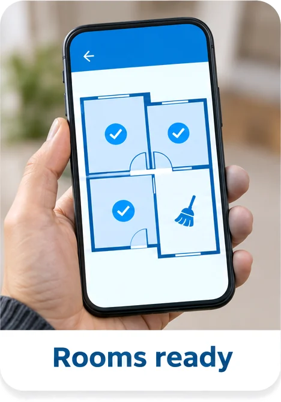
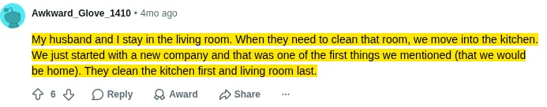

Family in the Loop






- Problem
- The person who decides is not in the room, and my family stays out of every room all day.
- Who has it
- Households with two incomes, landlords who live away, families during a cleaning or repair.
- What people say
- “When they need to clean that room, we move into the kitchen.” Homeowner on Reddit, r/HouseCleaning, 2026-08

Open the post